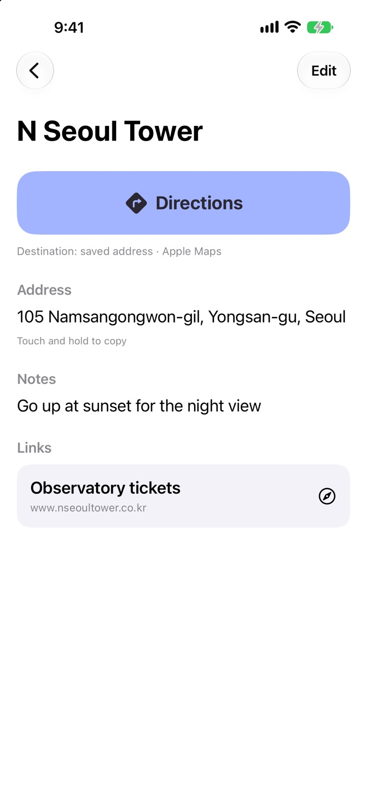

Collect
One share
One share
saves the place
In Google Maps, Apple Maps, Naver Map, KakaoMap, or Instagram, tap Share → HowTogo. The place name and link are saved together, along with the address when there is one.
Add notes and booking links so everything for your trip lives in one spot.
